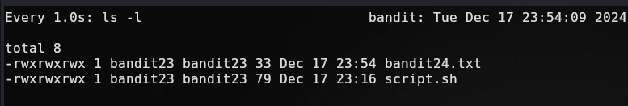
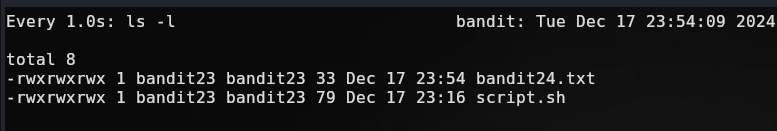

Bandit Nivel 23->24
Objetivo: Un programa se ejecuta automáticamente a intervalos regulares desde cron, el programador de tareas basado en tiempo. Busque en /etc/cron.d/ la configuración y vea qué comando se está ejecutando.
NOTA: Este nivel requiere que usted cree su primer script de shell. ¡Este es un gran paso y debería estar orgulloso de sí mismo cuando supere este nivel!
NOTA 2: Tenga en cuenta que su script de shell se elimina una vez ejecutado, por lo que es posible que desee conservar una copia…
Nos conectamos a la máquina:
ssh bandit23@bandit.labs.overthewire.org -p 2220
#Password bandit23
Buscamos la tarea cron en la ruta dada:
cat /etc/cron.d/cronjob_bandit24

Al igual que en el ejercicio anterior se ejecuta un script cada minuto, con lo cual vamos a ver cual es ese script.
cat /usr/bin/cronjob_bandit24.sh

Vamos a desglosarlo: Nota: $(comando) - bash interpreta el output del comando ejecutado a nivel de sistema 1- Guarda en la variable myname ‘bandit24’ dado que esta tarea la ejecuta dicho usuario. 2- Se ubica en /var/spool/bandit24/foo 3- Imprime que va a ejecutar y borrar todos los scripts ubidados en la ruta /var/spool/bandit24/foo 4- Vemos que en el ciclo for para cada elemento distinto de . (referencia al directorio actual ) y .. (el directorio anterior). Va a comparar su usuario con bandit23 y si es asi lo va a ejecutar y posteriormente a eliminar.
Entonces el objetivo básicamente es colar un script en dicho directorio para que el usuario bandit24 lo ejecute. Primero nos creamos un directorio temporal
mktemp -d
Nos movemos hacia el, en mi caso tiene este nombre, el nombre varia:
cd /tmp/tmp.QkN10Lt2WV
Aquí vamos a crear nuestro script y le damos permisos de ejecución:
touch script.sh
chmod +rx script.sh
nano script.sh
Que vamos a hacer suponiendo que tenemos los permisos de bandit24 lo mas lógico es ir a por su password que debe estar en /etc/bandit_pass/bandit24 como el resto de niveles.
Entonces en nuestro script le hacemos cat a dicho archivo y lo guardamos en un archivo de nuestro directorio temporal
#!/bin/bash
cat /etc/bandit_pass/bandit24 > /tmp/tmp.QkN10Lt2WV/bandit24.txt

Vamos a crear nuestro archivo txt para almacenar el password ahí y darle permisos para que otros (bandit24) puedan escribir en el.
touch /tmp/tmp.QkN10Lt2WV/bandit24.txt
chmod +xrw /tmp/tmp.QkN10Lt2WV/
chmod +xrw /tmp/tmp.QkN10Lt2WV/bandit24.txt
Lo tenemos todo listo ahora básicamente lo queda es copiar el script al directorio indicado para que bandit24 lo ejecute con la tarea cron.
#Estamos situados en /tmp/tmp.QkN10Lt2WV/ que es nuestro directorio temporal de trabajo.
cp script.sh /var/spool/bandit24/foo/script.sh
Ahora podemos esperar a que la tarea cron se ejecute y al hacerlo nos debe escribir el password en nuestro txt. Podemos observar los cambios en el directorio actual con el siguiente comando en intervalos de 1 segundo.
watch -n 1 ls -l
Vemos que el archivo bandit24.txt está vacío:
 Sin embargo cuando pasa al siguiente minuto se ejecuta la tarea y escribe el password en nuestro archivo.

Sin embargo cuando pasa al siguiente minuto se ejecuta la tarea y escribe el password en nuestro archivo.

Dando la contraseña para el siguiente nivel: 0Zf11ioIjMVN551jX3CmStKLYqjk54Ga
Escríbeme por cualquiera de las vías